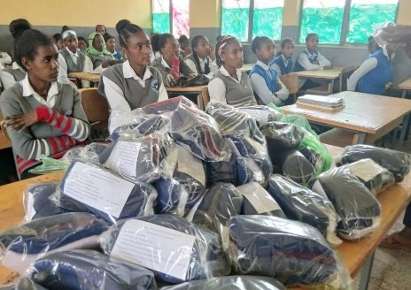
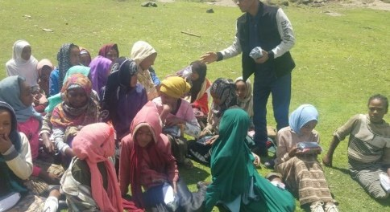
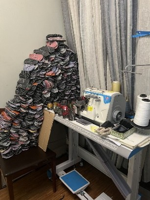

01
Project One
Result in Thanksgiving to God
“And through us your generosity will result in thanksgiving to God.”
2 Corinthians 9:11
Main activityGirls’ Menstrual Hygiene Project
- Production of reusable sanitary pads
- Distribution of free sanitary pads to schoolgirls
- Sharing the love of Christ


